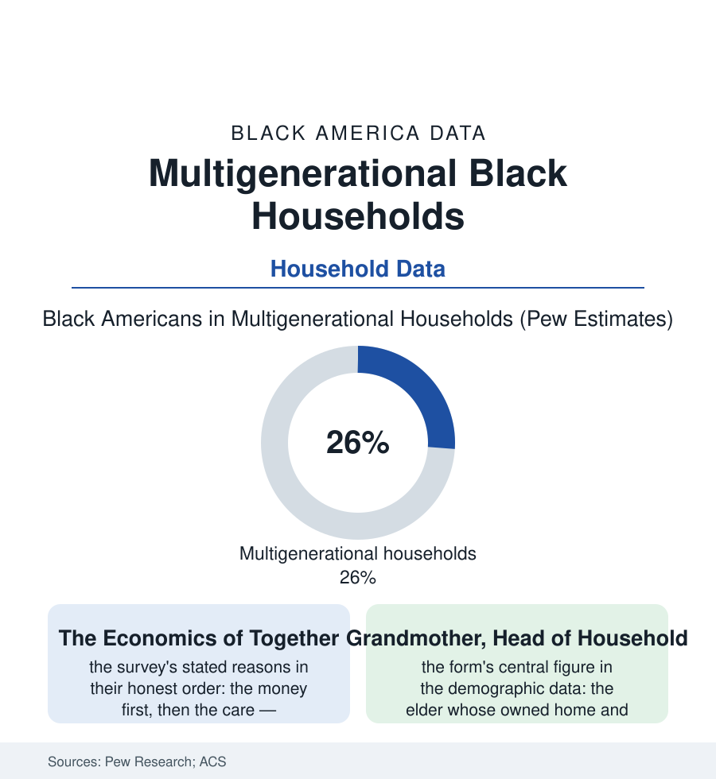

Black Census
Multigenerational Households: A Quarter of Black America Lives Three Generations Deep
About 26% of Black Americans live in multigenerational households — a living arrangement that is economic strategy, care system, and the data's rebuttal to the nuclear norm.

One in four Black Americans — about twelve million people — lives in a household of three or more generations, or two generations with adult children past the college years, by the Pew Research Center's definitions: the highest share of any major racial group in the United States, in a living arrangement America as a whole has been returning to for fifty years (the multigenerational share of the total population quadrupling since 1971 in Pew's series). The arrangement is usually discussed as a symptom — of housing costs, of the economy's failures. Its own data describe something more deliberate: a technology for pooling income, care, and risk that the Black household refined under constraint and now operates as infrastructure. This article profiles it.
The Composition: Who Lives With Whom
The household rosters decompose the arrangement's main forms: the grandparent-headed household (the grandparents article's population — the elder's home, the SSI or pension check as its anchor income, the adult child and grandchildren folded in), the adult-child-returned household (the twenty-five-to-thirty-four cohort — the group among whom multigenerational living is most common in the age tables, the boomerang of the student-debt and rent files made domestic), the middle-generation sandwich (the fifties household holding a parent above and children below — the caregiving file in floor-plan form), and the immigrant three-generation household (the African and Caribbean families of the foreign-born file, whose multigenerational rates run the highest of any subgroup — the arrangement as cultural default arriving fresh). The economics bind them: the shared housing payment against the region's rent burden, the pooled benefits and paychecks, the childcare that makes the second shift possible (the grandmother in the house is the early-childhood file's largest single provider), and the eldercare that defers the nursing-home ledger of the aging file by years per household.
The Outcomes Data: What the Arrangement Delivers
The arrangement's balance sheet in the research is two-sided and honest: on the asset side, the poverty arithmetic (multigenerational pooling measurably reduces poverty rates for the children and elders inside it in the Census Bureau's supplemental measures — the grandmother's Social Security check and the mother's wages covering what neither covers alone), the childcare and school-stability effects (the children of the arrangement changing schools less than the eviction file's children, their care continuous), the health-monitoring effect for elders (the daily presence the isolated-elder data lack), and the wealth function least priced: the house itself, held across generations in the arrangement's oldest form — the family home as the multigenerational technology's hardware, its heirs'-property risks the legal file's standing warning. On the strain side, the crowding measures (the persons-per-room data running highest in this arrangement and its doubled-up edge — the homeless file's households being this file's overflow), the privacy and autonomy costs the qualitative literature records without flinching, the caregiver load's concentration (the middle woman's hours), and the epidemic-era lesson (the multigenerational household's COVID exposure data — the essential worker bringing the virus to the grandmother the arrangement existed to protect, the mortality file's cruelest mechanism).
The Housing Stock and the Policy Frame
The built environment mostly pretends this household does not exist: the single-family zoning template (the nuclear household assumed in the code), the accessory-dwelling and in-law-unit reforms (the ADU legalizations spreading state by state — the arrangement retrofitted into legality, its Black homeowners' uptake in the early permit data), the multigenerational product lines the big builders now market (the dual-primary-suite floor plans — the industry's discovery of the census's fastest-growing household form), and the assistance formulas (the benefit programs whose household definitions penalize the pooled arrangement the poverty data praise — the SSI and housing-assistance household-composition rules the policy literature flags as the arrangement's standing tax). The design field's name for the whole file is the one the data endorse: the multigenerational household is not the economy's failure mode. In the Black data it is one of the economy's load-bearing adaptations — oldest in the population that needed it first, now generalizing to a country whose housing and care arithmetic increasingly resemble the constraints it was built under.
Reading the Multigenerational Data
A quarter of the population, three generations under one roof, poverty reduced and care delivered inside a floor plan the zoning code barely permits: the multigenerational file closes this section's household trilogy — the grandparents, the single fathers, and now the whole braided household — with the census's plainest lesson. Count the address and you find a family. Read the roster and you find a system: insurer, daycare, nursing home, and bank, incorporated at the kitchen table.
More in Black Census
The Black Population of the United States: Size, Definitions, and Distribution
The Black population of the United States totals 52.8 million — 15.4 percent of the nation. How the Census Bureau defines and counts the population, and where it lives.
Black Median Household Income in the United States
Black median household income stands at $56,490 in the Census Bureau's annual income report — how the figure is measured, how it compares, and what drives it.
The Black Poverty Rate: Levels, Children, and the Long Trend
The official Black poverty rate is 17.1 percent — against 11.1 percent nationally and 7.7 percent for non-Hispanic White Americans. How poverty is measured and what the data show.
Source: Pew Research Center analyses of Census Bureau data; U.S. Census Bureau, American Community Survey; AARP multigenerational housing research.